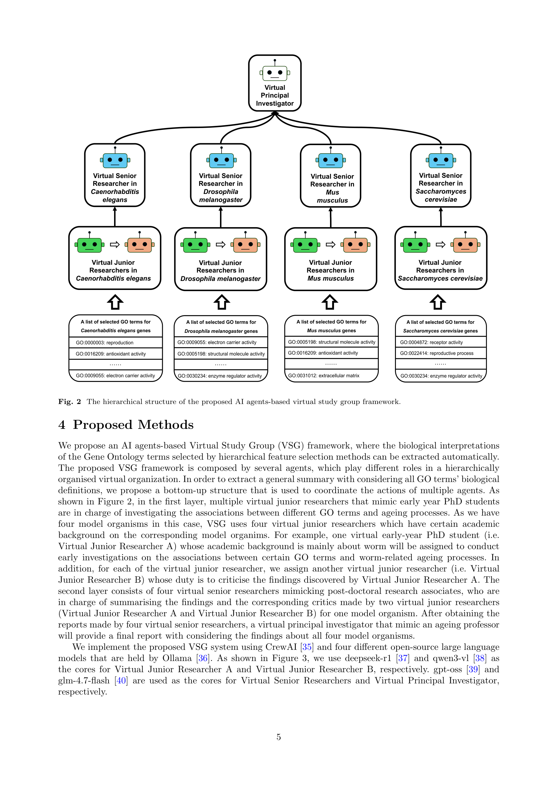
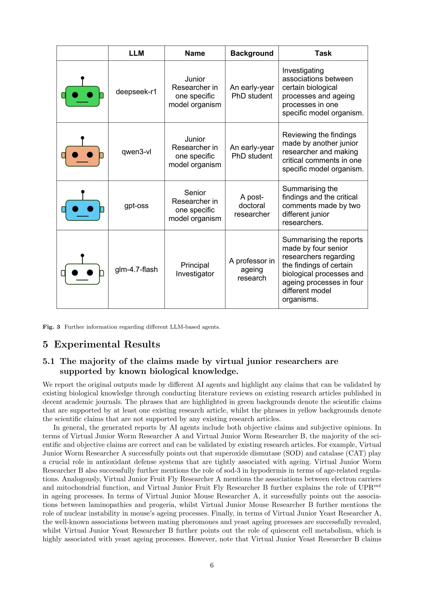

Figure 1
저자: Cen Wan, Alex A. Freitas | 날짜: 2026-03-20 | arXiv: 2603.20132
Figure 1
Hierarchical feature selection으로 선별된 노화 관련 Gene Ontology(GO) term들을 LLM 기반 multi-agent "Virtual Study Group(VSG)"이 자동으로 생물학적 해석하는 agentic AI 프레임워크를 제안한 연구이다. 4개 모델 생물(예쁜꼬마선충, 초파리, 마우스, 효모)의 노화 관련 GO term에 대해 junior researcher, critic, senior researcher, principal investigator 역할의 AI agent들이 계층적으로 지식을 생성하고 비판적 검토를 수행한다. 대부분의 AI 생성 주장이 기존 문헌으로 검증 가능함을 보였다.

Figure 2

Figure 3
총평: 학술 연구그룹의 계층적 토론 구조를 AI agent 시스템에 적용한다는 아이디어는 직관적이나, 실행과 평가 측면에서 크게 부족하다. 정량적 평가 지표가 전무하고, AI가 생성한 지식이 기존 문헌의 재서술을 넘어서는 새로운 발견인지 불분명하며, LLM 선택의 근거와 재현성에 대한 논의가 없다. 비판적 리뷰 agent가 항상 동일한 패턴(oversimplifies/overstates 비판)을 보이고 senior가 거의 항상 동조하는 것은 실제 과학적 토론의 복잡성을 충분히 모사하지 못한다. Proof-of-concept 수준의 탐색적 연구로서의 가치는 있으나, 기술적 엄밀성과 실용적 기여 측면에서 개선이 필요하다.